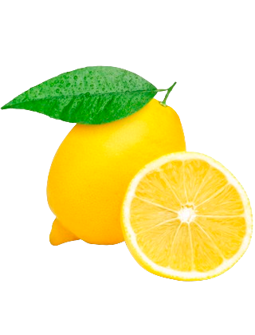
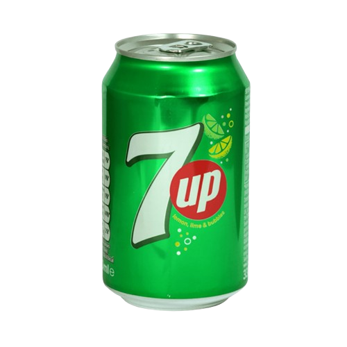
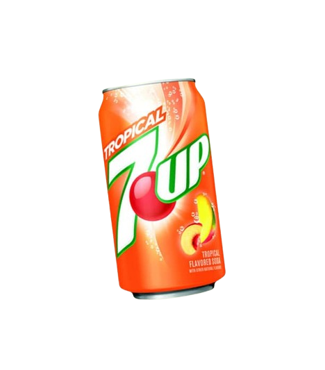
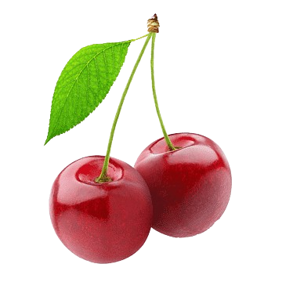
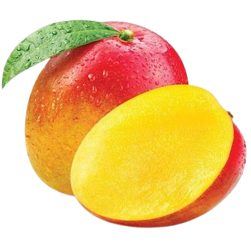

7 Up
    Flavour Updated
7UP offers a variety of refreshing flavors beyond its classic lemon-lime taste. The original 7UP is known for its crisp and tangy citrus flavor, making it a go-to soft drink for many. Over time, 7UP introduced several variations to enhance its appeal. 7UP Cherry adds a fruity twist with a sweet and tart cherry infusion, while 7UP Tropical, one of the newest additions, blends mango and peach flavors, creating a tropical, summery refreshment. The 7UP Shirley Temple, a limited-edition release, captures the essence of the famous mocktail with hints of cherry and pomegranate, offering a nostalgic yet fizzy treat. For those looking for a sugar-free option, Diet 7UP and 7UP Free provide the same citrusy burst without the calories. These flavors expand the versatility of 7UP, making it a perfect choice for both standalone enjoyment and as a mixer in creative beverages.